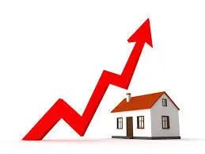
最近一直在研究房子，自然对于各种类型房子在不同地区的涨幅开始感兴趣了。到底在这些不同的地区，这些不同类型的房子的涨幅会有怎样的不同呢？
Redfin的数据分析平台很好地帮助我来分析这一问题。大家如果想自己做分析的话，可以点击文末左下角的“阅读原文”找到redfin的原链接。也可以直接访问
https://www.redfin.com/blog/data-center/。在分析之前，我先做一些简单的背景介绍。
首先是房屋类型的介绍。在美国常见的住宅房有这么几种，Condo（公寓），Single Family House（独栋别墅），简称为SFH，Townhouse（联排别墅），Multifamily（多家庭公寓）。
一般来说Condo会比较便宜，因为它的产权里面不包含土地。
Townhouse次之，因为它的产权虽然包含土地，但是仍然有诸多限制。
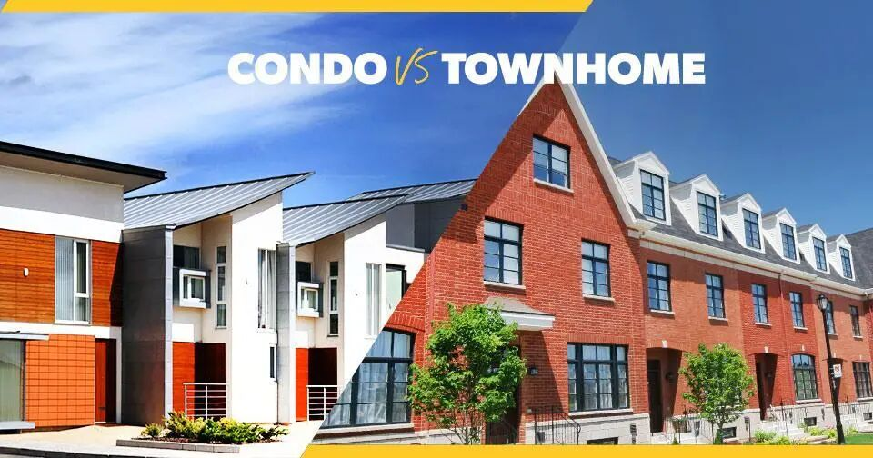
SFH会比Townhouse更贵一点，因为的产权包含一块土地，而且一般这个土地比较大，上面的房子也是独立的，不和邻居接壤的。
Multifamily会比SFH更贵一点，因为它不仅有土地，而且这个土地上可以允许建好几户的住宅，所以如果出租出去，租金会更高。不过由于Multifamily一般社区会比SFH差很多，所以均价和SFH差不多。
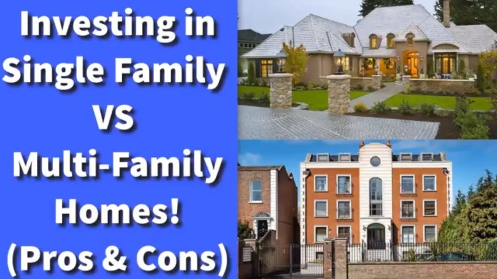
关于美国的不同房产类型就介绍到这里，下一个需要介绍的是湾区的几个不同的地区。我随便选了几个我自己比较熟悉的地区来比较。
San Mateo是一个传统的白人聚居区，学区中等，一般大家会觉得这个区域房价涨幅偏低一点，因为高工资的亚裔较少涌入这个地区。
Sunnyvale是大量码农置业的好选择，因为离Apple, Google等公司非常近。在过去我的印象里，这里的房价涨得非常厉害。传统上这里不算是特别好的区域，但是现在这里已经是非常好的区了。
East Palo Alto是一个传统上非常差的区，治安非常不好。但是近些年逐渐开始Gentrification的过程。
所谓Gentrification，指的是随着高收入人群的涌入，带动这个地区的房价上涨，物价上涨，从而让低收入人群逐渐搬离的过程。一般来说Gentrification的地区都是房价增速比较快的区域。
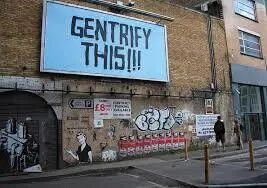
San Jose是一个继Sunnyvale之后大量码农置业的区域。相对来说这里比Sunnyvale要便宜一些，当然也要看San Jose具体哪个区域。
有了这些变量，我就可以尝试分析一下湾区这些地区，不同房屋类型的价格走势了。我首先用的价格参考方式用的是每平方英尺的中位数价格。
下表是我根据2020.6 和2012.2 每平方英尺的中位数价格之比来算出的每个地区，每种房屋类型的价格比值。
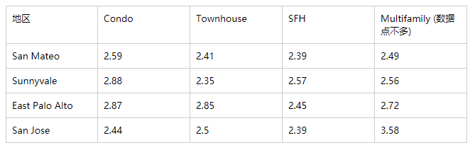
从表中可以看出，基本上所有区域从2012年到2020年的每平方英尺房价的上涨倍数都在2.4 - 2.88倍之间，并没有相差很多。
因此如果单纯从升值的角度考虑，似乎SFH并没有比Condo更加有升值潜力（甚至有些地区的condo要比SFH的升值倍数要更高）。
当然这里有一些不准确的地方，因为我们对比的并不一定是同一个Condo以及SFH的升值，由于近些年新建的Condo相比SFH更多，然后新建的Condo相对来说价格肯定更高，所以可能这也拉高了Condo的每平方英尺的价格。
下面几张图是具体的每种类型的房屋的每平方英尺的价格走势曲线。从图中可以看出，East Palo Alto的Condo的价格增速明显要比别的几个地区快很多，可能是因为那边有大量新建的公寓楼出现。相对来说East Palo Alto 的SFH就涨得没有那么快，但是也明显要比San Jose要更快。
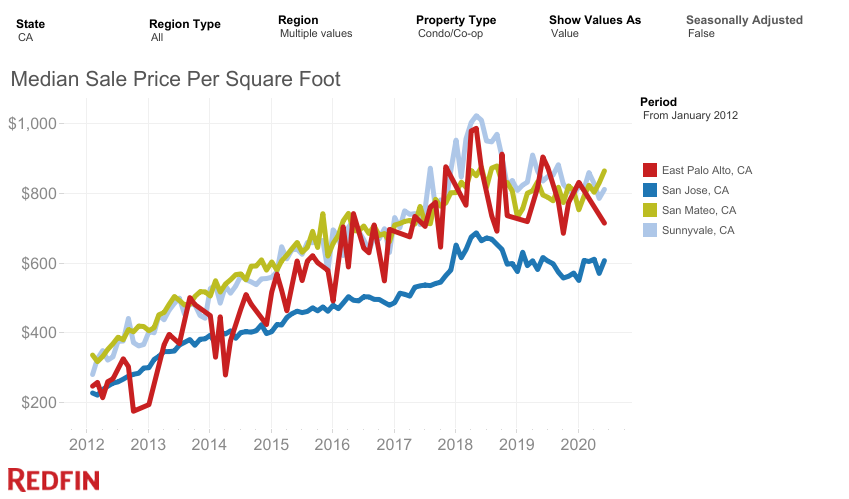
Condo
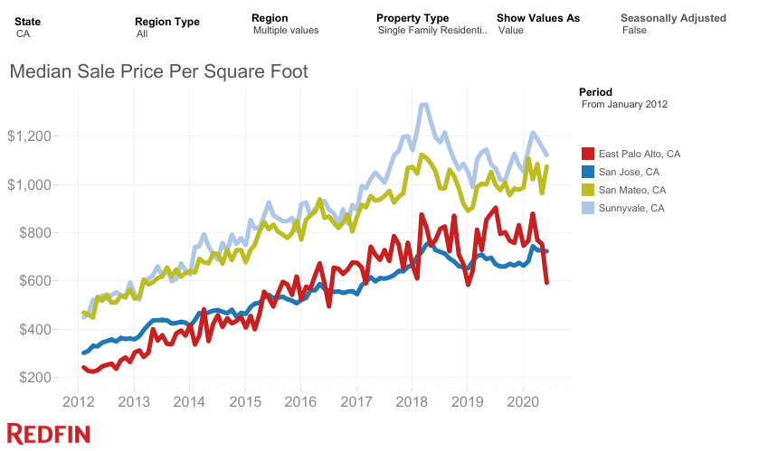
SFH
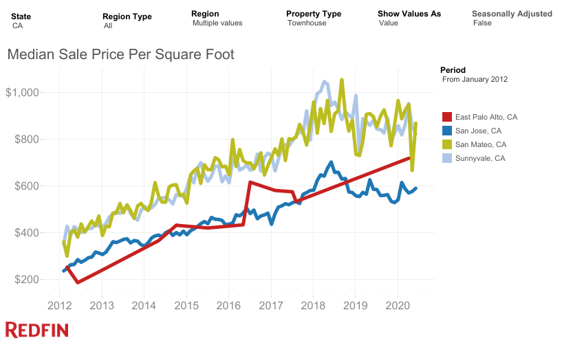
Townhouse
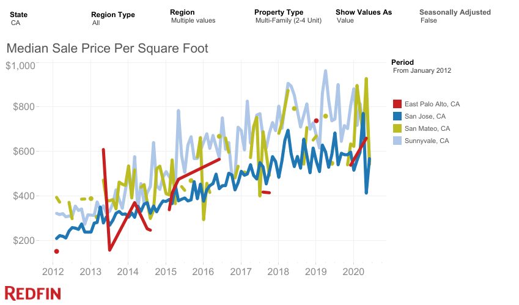
Multifamily
除了每平方英尺的价格，我们还可以用每一套房子的价格来衡量涨价的幅度。在用这个指数衡量的时候，Condo和Townhouse的增长倍数一下子提高了，说明新建的公寓普遍要比老式公寓每一套的面积更大。相对来说SFH的涨幅和之前用面积价格来计算的时候差不多一致，说明大家在SFH上面扩建的比例不太大。
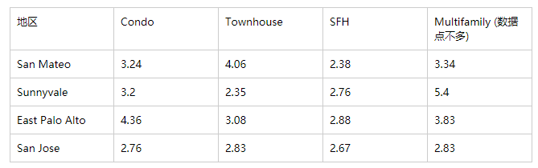
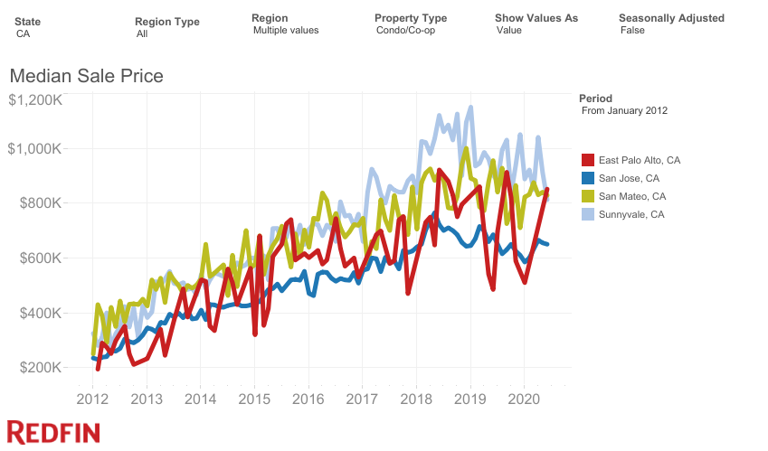
Condo
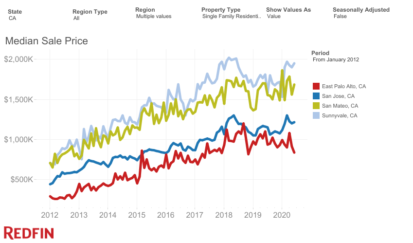
SFH
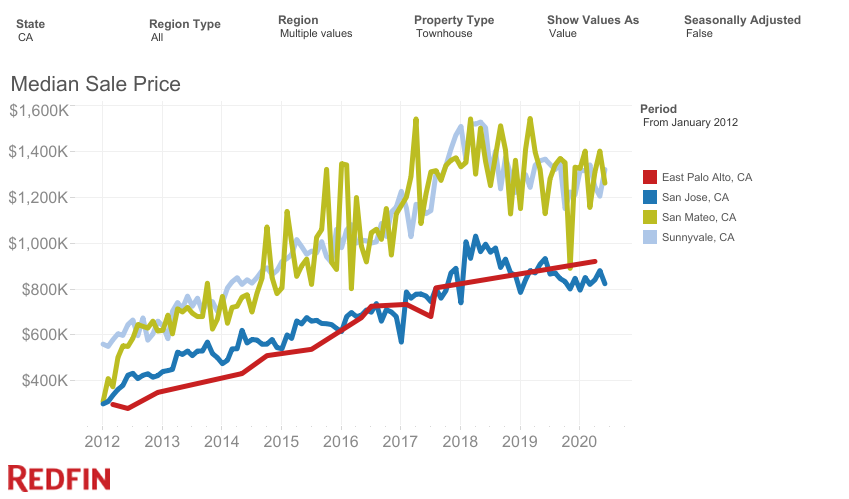
Townhouse
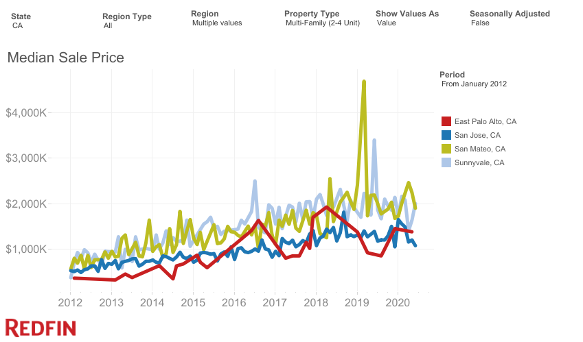
Multifamily
如果综合这两张表来说，单从SFH来说，San Mateo确实是相对来说涨幅最小的（两个指标都是）。涨幅最快的East Palo Alto，其次是Sunnyvale，San Jose仅仅是比San Mateo涨得稍微多了一点。
不过这个次序也是比较小的，差的倍数并不是特别大。
如果按照平均每年的增值速度来说的话（以中位数房价为准），在过去的8年中，San Mateo大概房价增速是11.4%，East Palo Alto 大概是14%，Sunnyvale大约是13.5%， San Jose大约是13%。
总结：
上面絮絮叨叨了一大堆，我来总结一下分析了半天的结论。
不管是Condo，SFH, Townhouse，其涨价的幅度相差不大，当然这还需要进一步分析，刨去新建公寓的因素。
不同地区的涨价幅度差异存在，但是也并不大。在Gentrification比较厉害的地区，比如过去的Sunnyvale以及近期的East Palo Alto，确实涨幅会更好一点。
湾区在过去8年的平均房价涨幅为11.5 - 14%之间，房价顶点出现在2018.4 左右，自那以后略有下滑，至今还未恢复当那时候的价格，不知道这次疫情的冲击会对湾区的房价又怎样的影响。
我觉得我根据这个数据源得到的分析肯定有很多的局限和不足，所以也欢迎大家给出你的想法和建议~